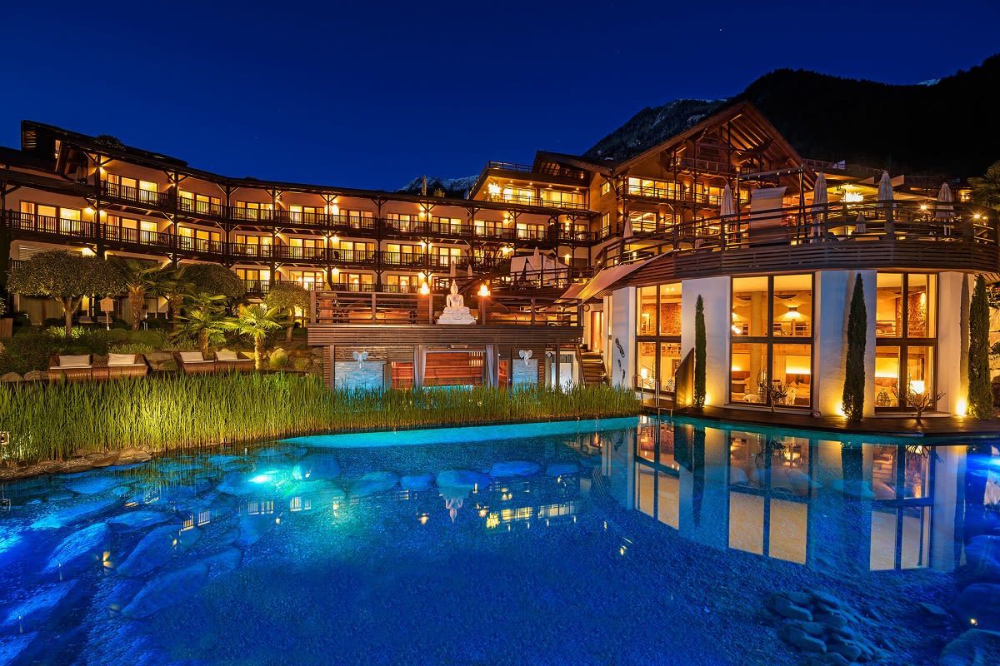

Luxury Hotel - ★★★★★
Only luxury for our clients
La nostra storia
La famiglia Paltracino, già hôteliers a Fuerteventura fin dal 1963, gestisce il Luxury Hotel a partire dal 1988. Costruito agli inizi degli anni 60, il progetto di questo hotel di 80 camere, tutte con le finestre e le terrazze rivolte tutte verso il mare, è stato ispirazione per eleganti edifici turistici costruiti successivamente. Mantenendo l’originalità e la bellezza di questa struttura fronte mare, nel corso degli anni vengono apportati vari interventi di rinnovo e restyling, anche di design. Sempre si praticano miglioramenti dei servizi offerti agli ospiti. Qui la vostra vacanza viene prima di tutto e l’obiettivo dell'affiatato team è, di creare un’atmosfera positiva per un soggiorno rilassante per l’ospite, che può contare su professionalità, gentilezza e disponibilità. L’atmosfera romantica, gli eleganti ed ampi spazi, il panorama mozzafiato con la migliore vista mare, rendono perfetto il Luxury Hotel per vivere la vacanza al mare in completa armonia.